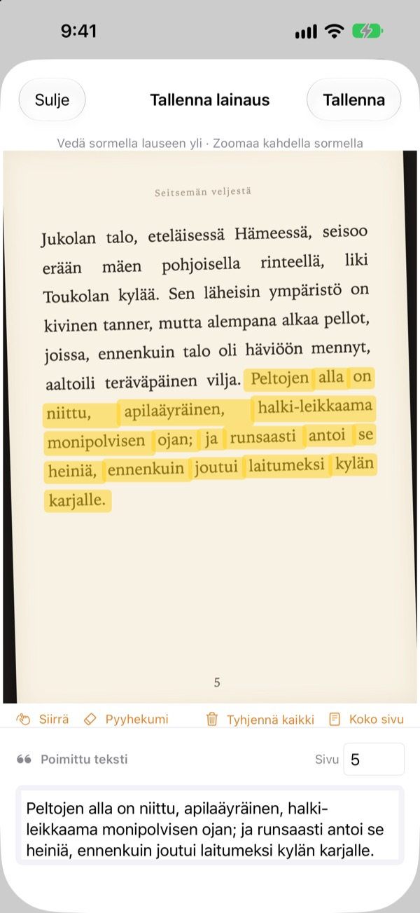
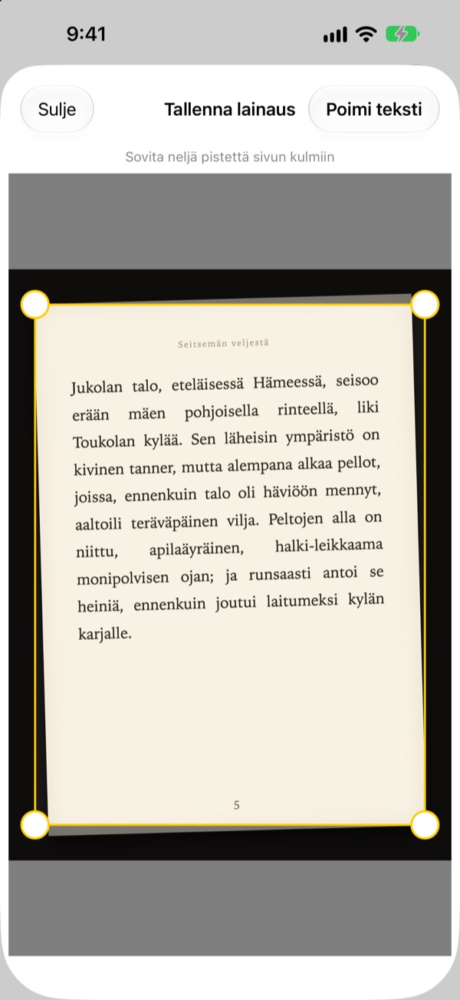
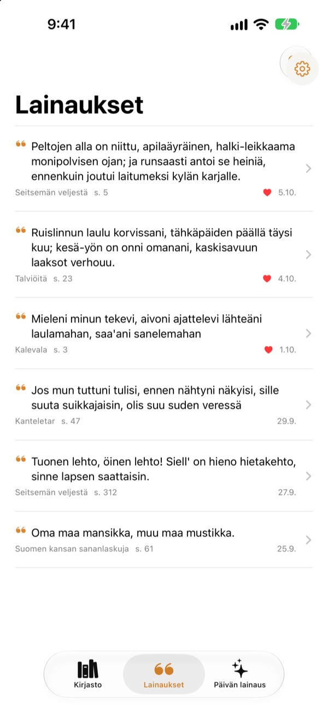
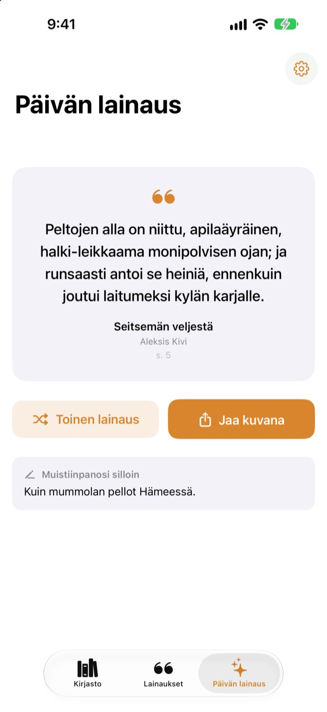

Alleviivaa kirjaa
ilman kynää
Kuvaa sivu, vedä sormella mieleisesi lauseen yli, niin vain se tallentuu tekstinä. Kirja ja sivunumero kulkevat mukana.
Kaikki toiminnot ilmaisia, ei mainoksia.

Kokeile vetää
Vedä sormella tai hiirellä minkä tahansa lauseen yli alla olevalla sivulla. Vain sanat, joiden yli vedät, päätyvät kortille.
Minne hyvät lauseet katoavat?
Kirjaston kirjaan ei saa tehdä merkintöjä. Kuva sivusta hukkuu tuhansien muiden joukkoon kamerarullassa. Jos kirjoitat lauseen muistiinpanosovellukseen, kirjan nimi ja sivunumero jäävät usein pois. Bookmark Shot tallentaa lauseen, kirjan ja sivun kahdella eleellä: kuvaa ja vedä.
Vino kuva, suora sivu
Kun olet kuvannut sivun, sovita neljä kulmaa paikoilleen, niin vinokin kuva oikenee kuin paperiarkki. Mitä terävämmät kirjaimet, sitä parempi tunnistus.
Myös kuvakirjastossa jo olevat kuvat käyvät.

Kaikki lainaukset yhdessä paikassa
Kirjasi ovat kirjastossa kansikuvineen ja lainauksesi kootaan yhteen luetteloon. Hae lauseen, muistiinpanon tai kirjan nimen perusteella ja merkitse sydämellä ne, jotka haluat lukea uudelleen.
Lisää kirja yhdellä kansikuvalla. Kirjan nimi ja kirjailija luetaan puolestasi, ja myös ISBN, jos takakannen viivakoodi näkyy kuvassa.

Kohtaa unohtuneet lauseet uudelleen
Päivän lainaus tuo joka päivä takaisin yhden tallentamistasi lainauksista yhdessä silloin kirjoittamasi muistiinpanon kanssa. Pidä se Koti-valikossa tai lukitusnäytöllä widgetin avulla.
Piditkö siitä? Tee siitä paperin näköinen kortti ja jaa se.

Aloita kolmessa vaiheessa
- 1
Kuvaa kansi
Kirjan nimi ja kirjailija täytetään. Voit korjata ne ennen tallennusta.
- 2
Kuvaa sivu
Sovita neljä kulmaa, niin sivu oikenee.
- 3
Vedä lauseen yli
Sivunumero löytyy ja tallentuu mukana.
Korostusnäkymän työkalut
- Vedä sormella
- valitsee vain sanat, joiden yli vedät
- Nipistä
- zoomaa lähemmäs tarkempaa vetoa varten
- Siirrä
- liikuta zoomattua sivua vetämällä
- Pyyhekumi
- poistaa valinnasta sanat, joiden yli vedit
- Tyhjennä kaikki
- poistaa kaikki valitut sanat
- Koko sivu
- säilyttää sivun koko tekstin
- Sivukenttä
- löydetty sivunumero, muokattavissa
VoiceOverilla voit lisätä tai poistaa rivin kaksoisnapauttamalla sitä.
Kaikki toiminnot ovat ilmaisia
Ilmainen
- Kirjojen lisäys kannesta, ISBN viivakoodista
- Sivujen suoristus ja korostus sormella
- Automaattiset sivunumerot
- Kirjasto, lainausten haku ja suosikit
- Päivän lainaus sekä Koti-valikon ja lukitusnäytön widgetit
- Jakaminen korttikuvana
- iCloud-synkronointi
Tue kehittäjää
- Voit halutessasi lähettää pienen tipin asetuksista
- Tippi ei avaa mitään. Sovellus on sama joka tapauksessa
Ei mainoksia, ei tilausta.
Kysymyksiä
Lähetetäänkö kuviani tai lainauksiani jonnekin?
Ei. Tekstintunnistus tehdään kokonaan laitteellasi Apple Visionilla, eikä kuviasi tai lainauksiasi lähetetä palvelimelle. Sovellus toimii myös ilman verkkoyhteyttä. Lisätietoja on alla olevassa tietosuojaselosteessa.
Mitä kieliä sovellus osaa lukea?
Tekstintunnistuksen tekee iOS laitteellasi. Se lukee kirjoja koreaksi, englanniksi, japaniksi, kiinaksi, venäjäksi ja useimmilla Länsi-Euroopan kielillä, ja uusimmissa iOS-versioissa myös thaiksi, vietnamiksi, turkiksi, indonesiaksi, puolaksi, tšekiksi, hollanniksi ja Pohjoismaiden kielillä. Kreikkaa ei vielä tunnisteta.
Miten valitsen vain haluamani lauseen?
Kun olet kuvannut sivun, vedä sormella lauseen yli kuin korostuskynällä, niin vain ne sanat valitaan. Zoomaa nipistämällä, niin veto on tarkempi. Lisäksi on Pyyhekumi, Tyhjennä kaikki ja Koko sivu.
Kirjan nimi tai kirjailija luetaan väärin.
Kannen tunnistus päättelee tiedot kirjainten koon perusteella, joten erittäin koristeellisissa kansissa se voi erehtyä. Voit korjata nimen ja kirjailijan ennen kirjan tallentamista.
Sivunumero on väärä.
Se luetaan kuvan reunassa olevista numeroista. Korjaa se vain sivukenttään ennen tallennusta.
Näenkö lainaukseni usealla laitteella?
Kyllä. Jos olet kirjautunut iCloudiin samalla Apple-tilillä ja iCloud Drive on päällä, kirjasi ja lainauksesi synkronoituvat automaattisesti.
Miten lisään widgetin?
Pidä sormea Koti-valikossa, napauta Muokkaa > Lisää widget ja valitse Bookmark Shot. Lukitusnäytöllä pidä sormea näytöllä ja napauta Muokkaa. Päivän lainaus näkyy siellä.
Kamera ei toimi.
Tarkista kohdasta Asetukset > Bookmark Shot, että pääsy kameraan ja kuviin on sallittu. Kuvaamiseen tarvitaan oikea iPhone.
Mitä tarvitsen?
iPhonen, jossa on iOS 17.0 tai uudempi.
Miten otan yhteyttä?
Lähetä palautetta sovelluksen Asetukset-näkymästä (ratas) tai sähköpostilla alla olevaan osoitteeseen. Vastaamme yleensä kahden–kolmen päivän kuluessa.
Kysyttävää tai palautetta? Kirjoita osoitteeseen leeo@kakao.com.